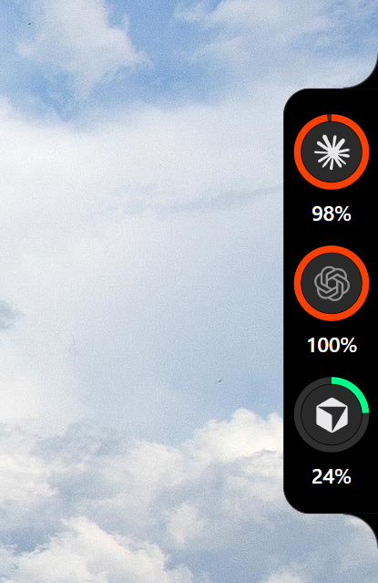

Windows 원클릭 설치
Releases에서 Codenotch-Setup-x.y.z.exe(NSIS)를 받아 실행하면 됩니다. 사용자별 설치라 관리자 권한이 없고, Rust 툴체인도 필요 없습니다. 포터블은 codenotch-x.y.z-portable.zip입니다.
Windows · 최신 v0.4.2
The usage notch that sits on the edge of your screen.
화면 가장자리에 붙어서 두 가지에 한눈에 답합니다. AI 사용량이 얼마나 남았나, 그리고 Claude가 아직 작업 중인가.

macOS 원본과 같은 디자인 언어를 Rust + Tauri 2 / WebView2로 다시 만든 Windows 빌드입니다. 이 포크는 배포가 없던 포트에 실행 파일을 더합니다.
Releases에서 Codenotch-Setup-x.y.z.exe(NSIS)를 받아 실행하면 됩니다. 사용자별 설치라 관리자 권한이 없고, Rust 툴체인도 필요 없습니다. 포터블은 codenotch-x.y.z-portable.zip입니다.
주 모니터 오른쪽 가장자리에 역방향 라운드 필이 붙습니다. 색상 그라데이션 링으로 사용량을 보고, 마우스를 올리면 창별 막대가 있는 호버 카드가 펼쳐집니다. Claude가 작업 중이면 얇은 호가 회전하고, 입력을 기다리면 주황색으로 맥박합니다.
Claude Code, Codex, Cursor, Antigravity 사용량을 읽습니다. 설치되지 않은 도구는 셀 자체가 나타나지 않습니다. 자격증명은 각 도구가 이미 보관 중인 로컬 파일에서만 읽습니다.
인스톨러 설치본이 GitHub Releases 자동 업데이트 채널입니다. 업데이터 마일스톤(v0.5.0)이 들어오면 앱이 스스로 최신 버전을 유지합니다. 포터블 zip은 자동 교체 없이 새 버전 알림만 표시합니다.
각 셀은 해당 벤더의 자체 엔드포인트와 로컬 자격증명만 사용합니다. 추측값은 표시하지 않습니다.
agy CLI 또는 로컬 브리지로 Gemini·Claude/GPT 쿼터를 표시합니다.
요구사항: Windows 10/11과 WebView2 런타임. Windows 11은 기본 내장, Windows 10은 인스톨러가 자동 설치합니다.
Releases에서 권장 파일 Codenotch-Setup-x.y.z.exe를 받습니다.
실행해 사용자 계정에 설치합니다. 관리자 권한은 필요 없습니다.
주 모니터 오른쪽에 필이 나타납니다. 트레이에서 Settings, Refresh, Quit를 엽니다.
각 도구에 한 번 로그인하거나 실행하면 셀이 살아납니다. codenotch.exe doctor로 진단을 볼 수 있습니다.
바이너리는 아직 코드 서명이 없어 첫 실행 시 SmartScreen 경고가 뜹니다. 추가 정보 → 실행을 선택하세요.
자격증명은 각 벤더 앱이 이미 컴퓨터에 보관 중인 파일에서만 읽고, 해당 벤더 엔드포인트로만 전송됩니다. 텔레메트리와 분석 수집은 없습니다. 전부 사용자 권한으로 동작합니다.
Im-Midi/codenotch-windows 포트에 바이너리 릴리스를 더한 배포 포크입니다. 디자인과 이름은 업스트림 Codenotch에 있습니다. MIT.